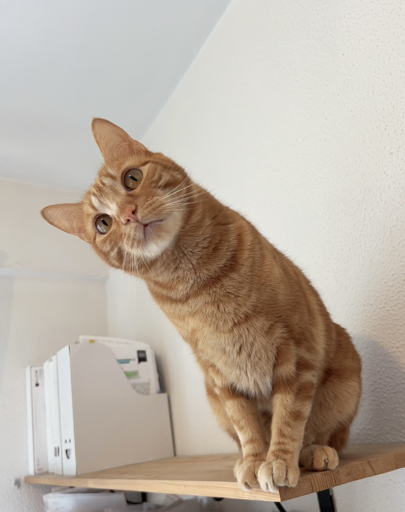
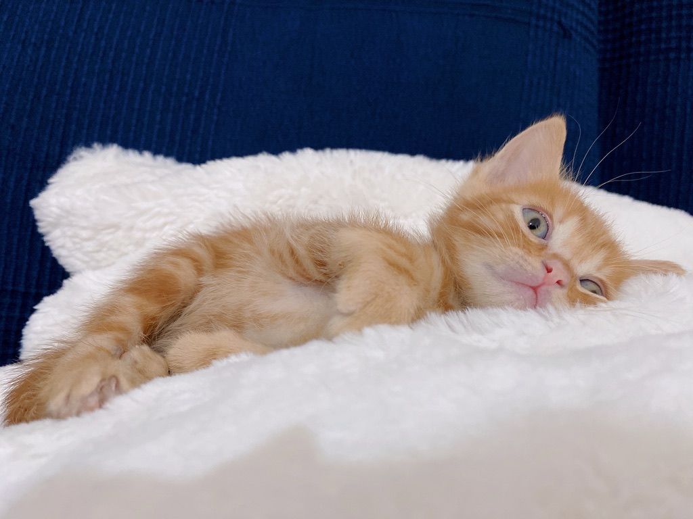
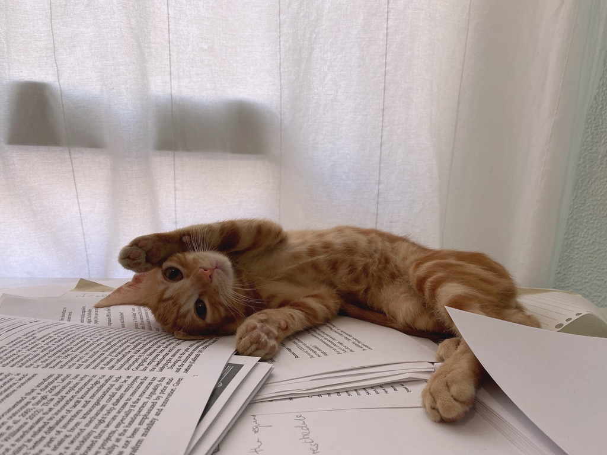

My Cat
Hello! My name is Orange Peel, and I’m four years old. I’m a good-natured cat. I spend most of my day sleeping, but every now and then I read papers.
Before moving in with Yunfan, I lived at an animal protection centre in Madrid. I like living with Yunfan, especially because she gives me delicious cat treats from time to time.


